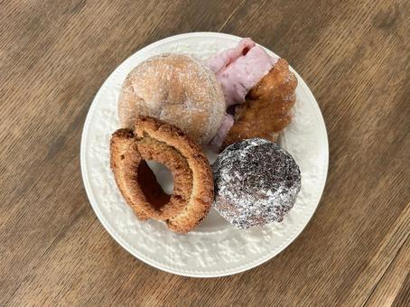
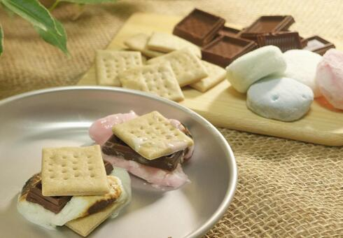
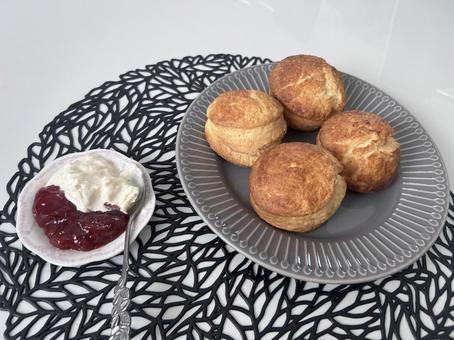
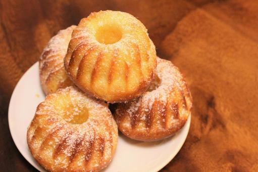
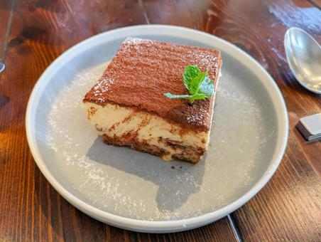
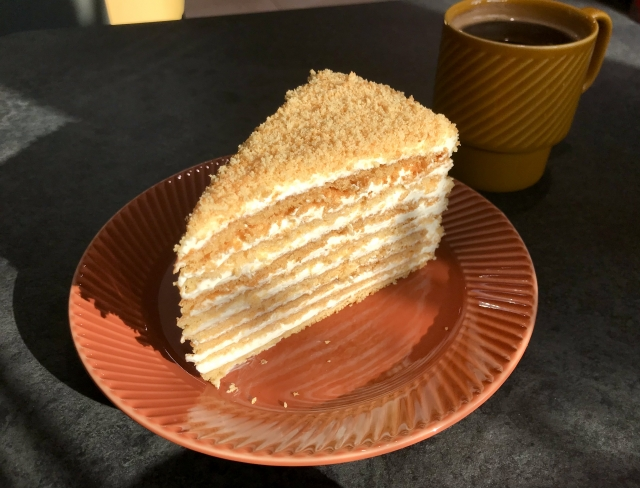
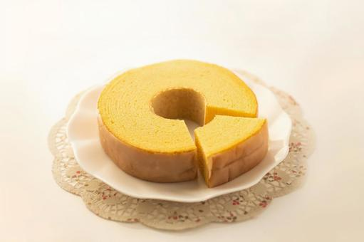
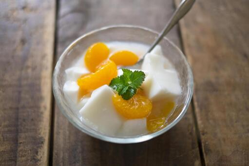
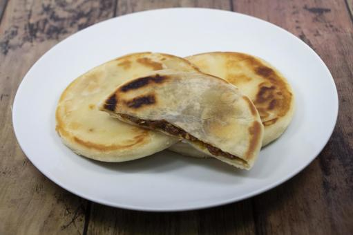

アメリカ
マラサダ
ハワイで人気のお菓子で外はサクサク、中はふんわりとした食感が特徴で、砂糖がまぶされています。
味はプレーンだけでなくカスタードやチョコレートなどのフィリングが入ったものもあります。
カナダ
スモア
スモアは、キャンプファイヤーで作られるアメリカの伝統的なおやつで、焼いたマシュマロとチョコレートをグラハムクラッカーで挟んだものです。
名前の由来は「some more（もっとちょうだい）」を縮めたものと言われており、子どもから大人まで人気があります。
イギリス
スコーン
スコーンは、イギリス発祥の焼き菓子で、小麦粉、バター、砂糖、ベーキングパウダー、牛乳などで作られ、軽くふんわりした食感が特徴です。
丸形や三角形に成形され、クロテッドクリームやジャムを添えて紅茶と共に楽しむことが多いです。
名前はスコットランドのゲール語「sgonn」（石）に由来しています。
フランス
クグロフ
クグロフは、中欧や東欧で作られるリング状の発酵菓子で、アーモンドやレーズンが入ったふんわりとしたケーキです。
粉砂糖をかけて仕上げ、特にフランスのアルザス地方やオーストリアで人気があります。
名前はドイツ語の「Gugelhupf」に由来しています。
イタリア
ティラミス
ティラミスは、イタリア発祥のクラシックなデザートで、コーヒーとラム酒がしみ込んだスポンジケーキに、マスカルポーネチーズと卵黄を使ったクリームを重ねた層構造の菓子です。
最後にココアパウダーを振りかけて仕上げます。
ロシア
メドヴィク
メドヴィクは、19世紀にロシアで誕生した伝統的な蜂蜜ケーキで、蜂蜜を使ったしっとりとした層のケーキです。
クリームを挟んで層にし、冷やしてから食べるのが特徴です。
ドイツ
バームクーヘン
バームクーヘンは、ドイツ発祥のスポンジケーキで、木の切り株のような模様が特徴です。
多層の生地を焼き重ねて作られ、18世紀に貴族の間で始まりましたが、現在では広く親しまれています。
中国
杏仁豆腐
杏仁豆腐は、日本や中国などで広く親しまれる伝統的なデザートで、主にアーモンド風味のプディングです。
ゼラチンや寒天を使って固め、冷やして食べるのが一般的で、甘さ控えめで軽やかな口当たりが特徴です。
韓国
ホットク
ホットクは、韓国の伝統的な焼き菓子で、小麦粉の生地で包んだ中には、砂糖とシナモンを入れた甘い餡が入っています。
通常は揚げたり焼いたりして作られ、熱々の状態で街角や市場で手軽に楽しめる人気のスナックです。